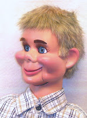

Untitled
3/6/2009
{kind=link}

Dear Clinton: I have decided to call your "Luke" "C J" after his father and his adopted father. I am working on a skit for him, and the name might change after I take my first look at my new boy, when he arrives. Today is Friday the 6th, so he has already been traveling a full 2 days and must be tired and hungry. His friends are waiting his arrival. I know he will love his new home, so thank you and a further message will be sent upon his arrival. N J
* * * * * *
Dear N J: "CJ/Luke" should be delivered to your door today or tomorrow. He was excited to be on his way, and I build a great deal of patience into all my characters, so he should be in good spirits when you meet. And my guys (and gals) are trained to rest and meditate as they travel so they arrive refreshed, eager to go to work. Should he get bored enroute, he is traveling with a book on ventriloquism which he can read. As for food - all the nourishment needed is a bit of your daily tender love and care. Clinton